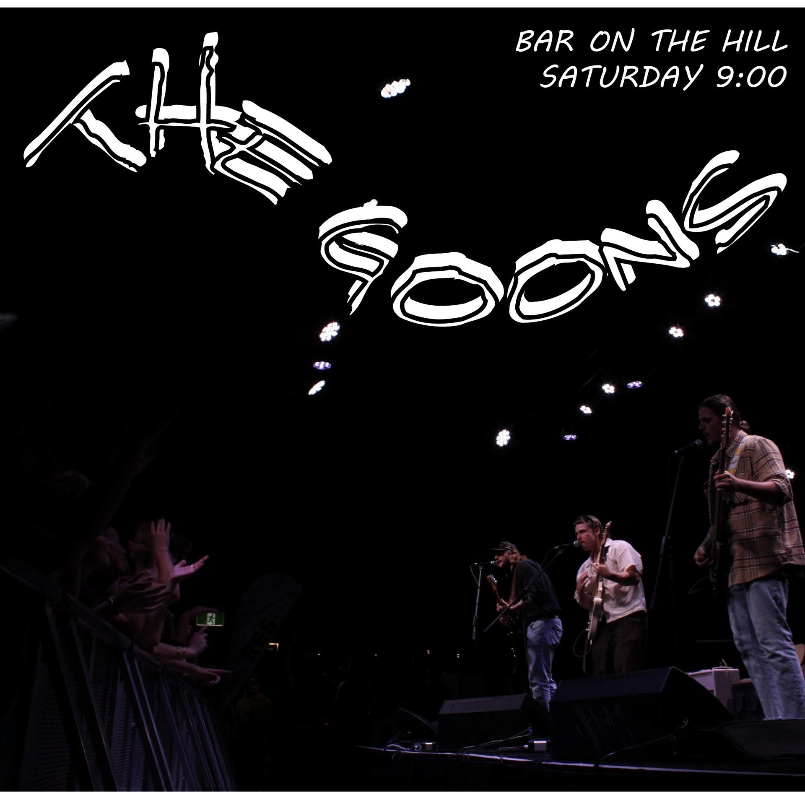
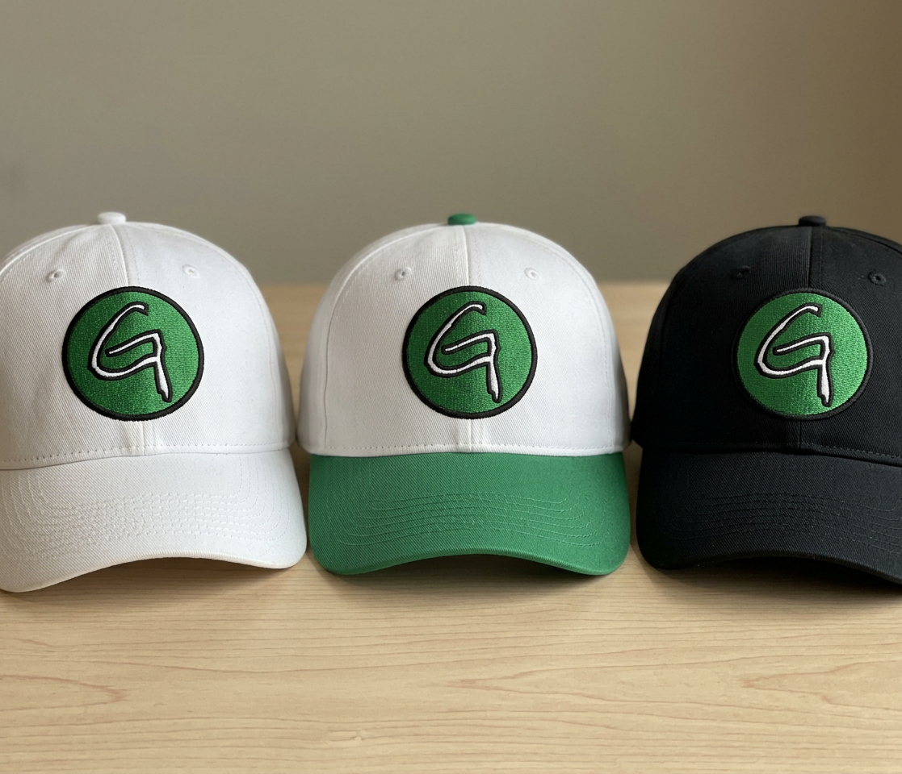
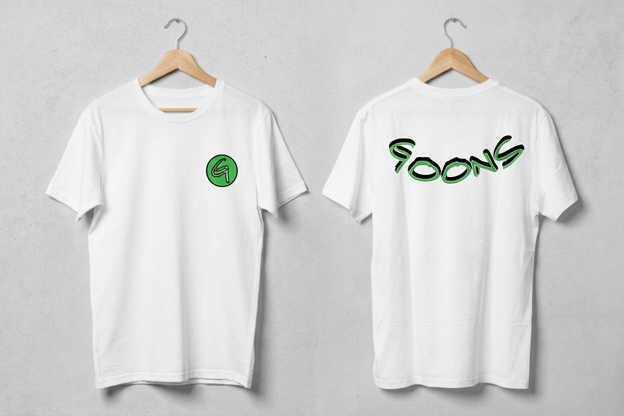
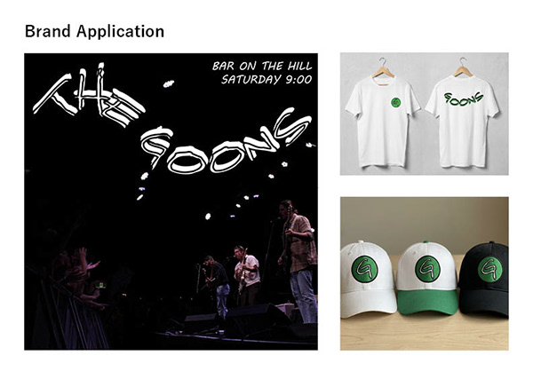
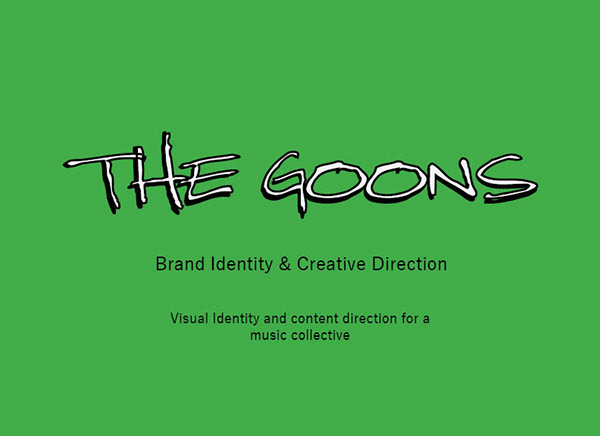
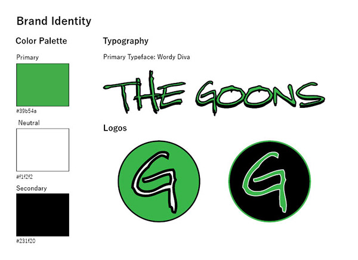
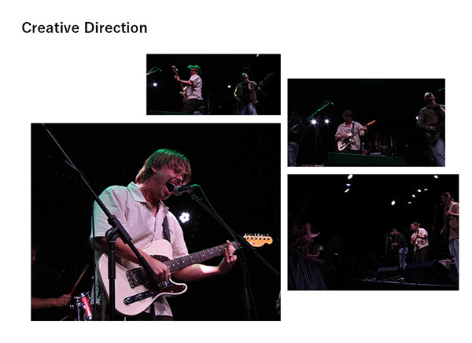

A loud, culture-first identity for a live collective, built to look as good on a poster as it does on a hat, a feed, or a screen.

Overview
The Goons needed an identity with personality, something that could rally a crowd and still feel intentional up close. The brief: a bold wordmark, a flexible system, and assets that move from print to merch to motion without losing the attitude.
I built a green-forward visual language anchored by a confident logotype, then stress-tested it across the touchpoints a live brand actually lives on.
A look at the world
Identity · Merch · Motion



The Challenge
A culture brand has to feel spontaneous, but spontaneity falls apart without a system. The challenge was a mark that reads instantly from across a room and a kit of parts that anyone on the team could deploy without breaking the look.
My role: I led identity design end-to-end (logotype, color, type, and layout rules) and extended it into poster, merch, and a short motion reel for social.
Creative Process
Execution


"It finally looks like us. Loud, but not a mess."
Placeholder, The GoonsOutcome
A cohesive identity that scaled from a single poster to a full merch drop and a social-ready motion reel, with a system simple enough for the team to run themselves.